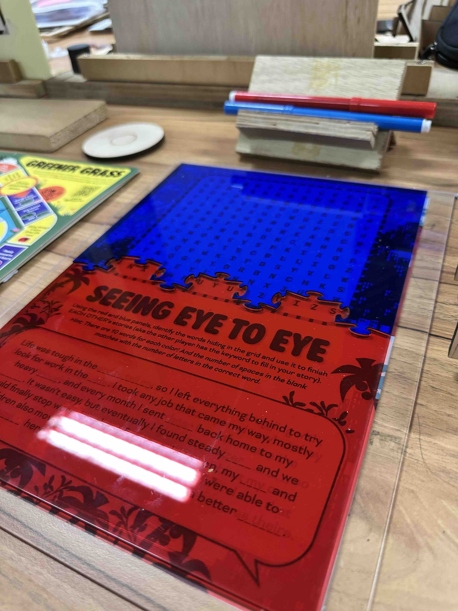
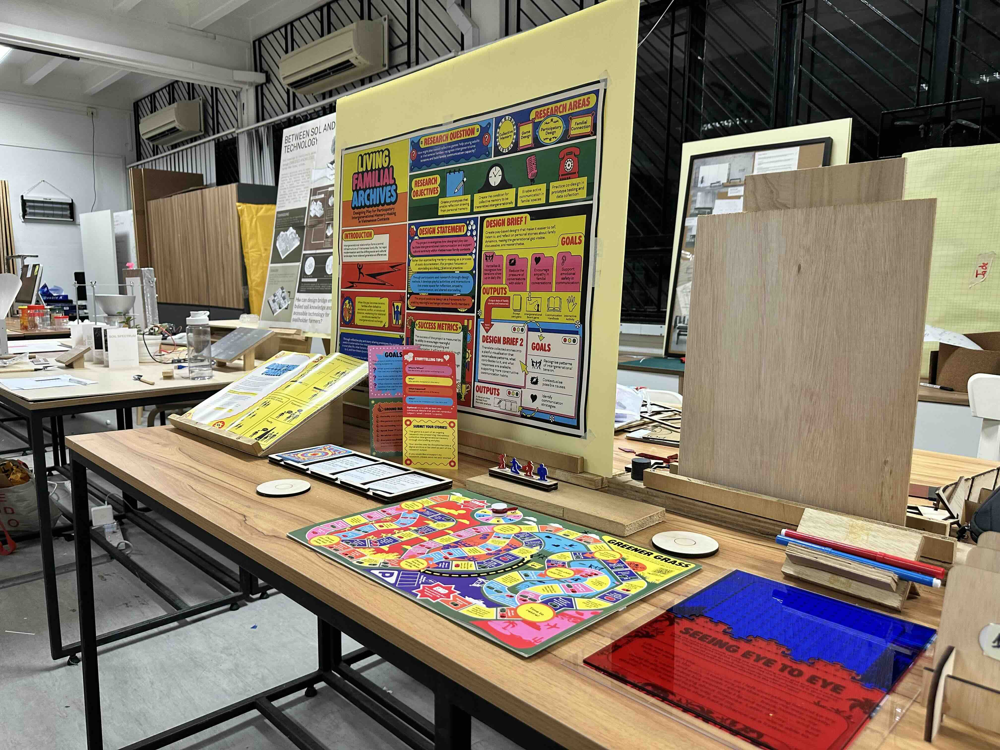
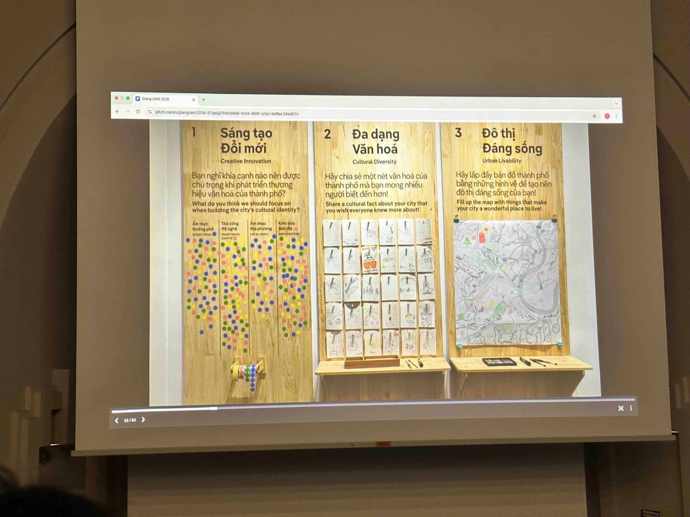
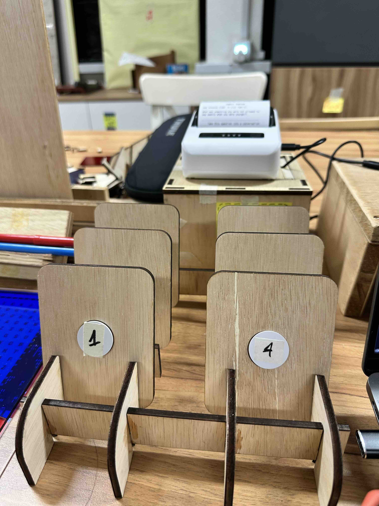
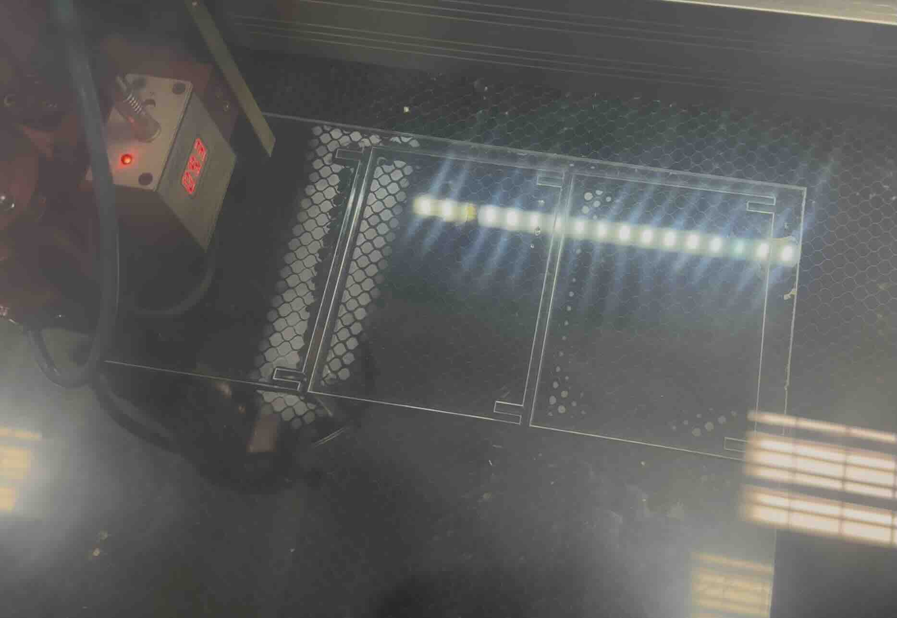
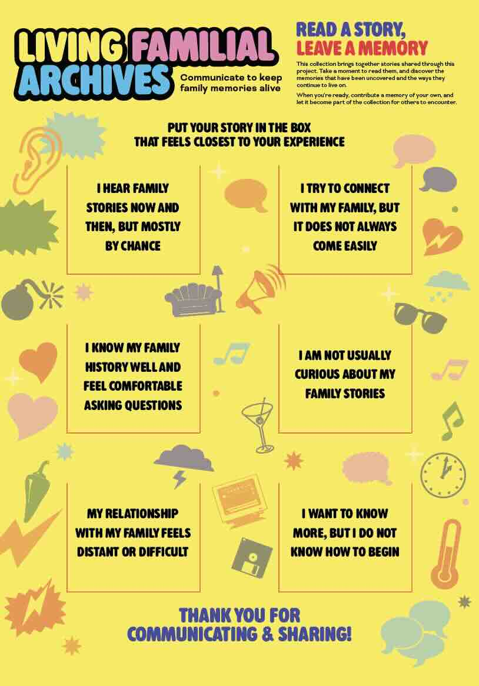

Activities
- Finalise table display for Work Check with all prototypes
- Perform another round of user testing
- Finalise prototypes for WIP exhibition
Reflection
After the user test last week, I managed to implement some urgent updates to the prototype, mostly for the Greener Grass board game and the anaglyph puzzle Seeing Eye-to-Eye prototypes, which both did not perform well last week, so that I can perform one more user test this week.

But having acquired most of the elements for the table, I put together what was hopefully the final layout of my display, which I got some more feedback during the Work Check on Tuesday, as well as the last design workshop on Wednesday.

Having attended a seminar over the weekend, I got an inspiration from one of the speaker for my display. This speaker presented a case study of their own exhibition that had a display guest can interact with and the results can be collated into a quantitative survey.

And I wanted to implement this feature so that I can collect the results from the printer in a thematic system, hence I added a collection box feature to the printer installation.

So I designed a collection board that allows the user to put stories in based on how they want their family relationship to develop in the future.


Literature This Week
Tasks
- Consolidate user testing feedback and footage to present during exhibition
- Finalise table display elements and prototypes
- Consider future development for next semester